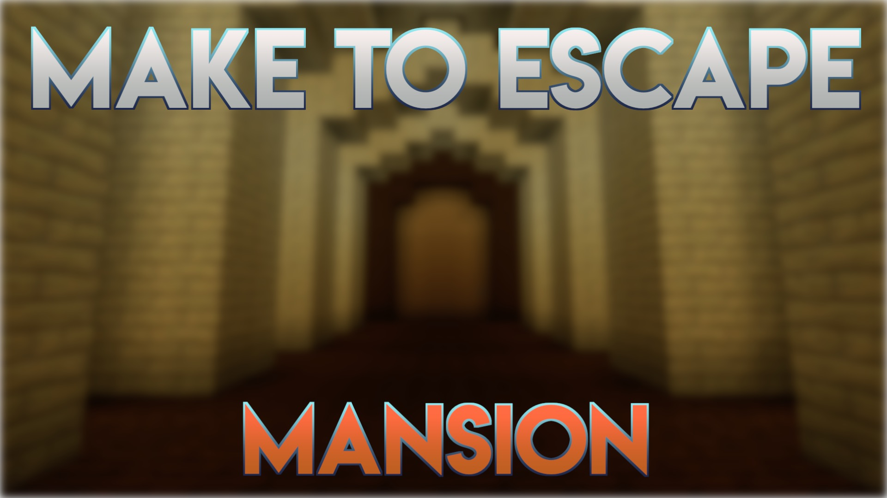

Make to Escape - Mansion

CrazyCowMM
Make to Escape - Mansion is a dive into custom crafting recipes. Solve puzzles by crafting items and escape the Mysterious Mansion!
Some crafting recipes will be given to you via the recipe book, while other will not.
There is no in game hint system however a walkthrough is provided.
The map is pretty short and I'm guessing it will take somewhere between 5-10 minutes to finish(it's hard to guess when you know the answer to everything)
Default crafting recipes have been disabled, so don't worry about crafting the wrong thing.